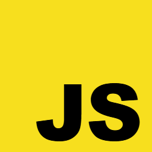

Selected work
Lavori selezionati
Projects
Progetti
Things I built to understand how they work from the inside - emulators, data structures, storage engines, API clients. Filter by technology.
Cose che ho costruito per capirle da dentro - emulatori, strutture dati, motori di storage, client API. Filtra per tecnologia.
EMULATOR · GO
CHIP-8 Emulator
A CHIP-8 emulator written from scratch in Go, faithful enough to the original
machine that games written for it in the late seventies still run: Pong, Tetris,
Space Invaders.
Un emulatore CHIP-8 scritto da zero in Go, abbastanza fedele alla macchina
originale da far girare ancora i giochi scritti per lei negli anni Settanta:
Pong, Tetris, Space Invaders.
- All 34 instructions of the original machine
- Screen, sound and controls rebuilt from nothing
- A debugger in the terminal to watch memory change
- Tutte le 34 istruzioni della macchina originale
- Schermo, suono e comandi ricostruiti da zero
- Un debugger nel terminale per seguire la memoria
API CLIENT · JAVA
Alpaca REST Client
A Java library for trading on Alpaca - orders, positions, account, watchlists -
that wraps the broker's REST API so an application never has to call it directly.
Una libreria Java per operare su Alpaca - ordini, posizioni, conto, watchlist -
che incapsula le API REST del broker, così l'applicazione non deve mai chiamarle
direttamente.
- Knows what is safe to resend, and what would risk a duplicate order
- Tracks how many requests the broker still allows, and slows down in time
- Handles the same API returning dates in three different formats
- Sa cosa si può reinviare e cosa rischierebbe un ordine doppio
- Tiene il conto delle richieste ancora concesse dal broker e rallenta in tempo
- Gestisce la stessa API che restituisce le date in tre formati diversi
TELEGRAM BOT · PYTHON
One Piece Chapter OUT
A Telegram bot that announces new One Piece chapters. The release banner only
exists once the page has rendered, so the bot loads it in a real browser, takes a
screenshot and reads the announcement with OCR.
Un bot Telegram che annuncia l'uscita dei nuovi capitoli di One Piece. Il banner
esiste solo dopo che la pagina è stata renderizzata, quindi il bot la carica in un
browser vero, ne fa uno screenshot e legge l'annuncio con l'OCR.
- Checks more often during the window when chapters usually appear
- The first check of the week does the work; the rest are served from it
- Tracks what it has already sent, so no duplicates and no gaps
- Controlla più spesso nella finestra in cui di solito escono i capitoli
- Il primo controllo della settimana fa il lavoro, gli altri sono serviti da quello
- Tiene traccia di cosa ha già inviato: niente doppioni né buchi
A library of the data structures C does not give you: linked lists, hash maps,
binary search trees and matrices, generic over the data they hold.
Una libreria delle strutture dati che il C non ti dà: liste concatenate, hash map,
alberi binari di ricerca e matrici, generiche rispetto ai dati che contengono.
- One matrix multiply for any numeric type, instead of one per type
- Every module states who owns the memory and who frees it
- Tests count every allocation, so a leak becomes a failing test
- Una sola moltiplicazione di matrici per qualsiasi tipo numerico
- Ogni modulo dichiara di chi è la memoria e chi deve liberarla
- I test contano le allocazioni: una perdita diventa un test che fallisce
KEY–VALUE STORE · GO
Redis Go Clone
An in-memory key–value store rebuilt from scratch in Go - the kind of database the
web runs on for sessions, counters and caches - with a command-line client and
nothing but the standard library.
Un key–value store in memoria ricostruito da zero in Go - il tipo di database su
cui il web si appoggia per sessioni, contatori e cache - con un client a riga di
comando e nient'altro che la libreria standard.
- Keys can be given an expiry date and disappear on their own
- Saves to disk every few seconds, so a restart loses almost nothing
- Takes a whole JSON document as a single value
- Alle chiavi si può dare una scadenza: poi spariscono da sole
- Salva su disco ogni pochi secondi, così un riavvio non perde quasi nulla
- Accetta un intero documento JSON come singolo valore

WEB APP · GEOSPATIAL
Criminal Geoprofiler
Geographic profiling estimates where an offender is likely to be based from the
locations of the crimes. This tool puts four published methods on the same map.
La geoprofilazione criminale stima dove sia probabilmente basato l'autore dei
reati a partire dai luoghi dei delitti. Questo strumento mette quattro metodi
pubblicati sulla stessa mappa.
- Four methods on the same data, to see where they disagree
- Comes loaded with the Monster of Florence case as an example
- Runs entirely in the browser, nothing to install
- Quattro metodi sugli stessi dati, per vedere dove si separano
- Arriva con il caso del Mostro di Firenze come esempio
- Gira interamente nel browser, niente da installare